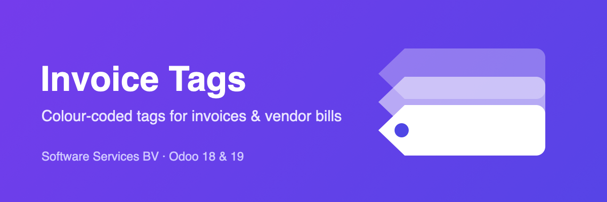

Add your own labels to any customer invoice or vendor bill — the same tagging experience you already know from Contacts, CRM and Projects, now on Accounting. Add tags in the form header, or inline from the list.
Each tag carries a colour, so a list of invoices tells its story at a glance. Filter customer invoices and vendor bills by tag straight from the search bar.
Install the module, create a few tags under Accounting › Configuration › Invoice Tags, and start tagging. No setup, no settings.
The tag field is namespaced (softwareservices_tag_ids), so it
never clashes with Odoo core or other apps, and your tag data is
preserved across upgrades.
The module stores only the tags you create and their links to your invoices, in your own Odoo database. Nothing is sent to any third party and no external service is contacted.
Odoo partner — Belgium. Support: info@softwareservices.be · www.softwareservices.be